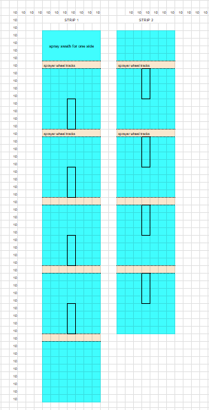

plotLength = 30
plotWidth = 5PAPFA trial design
Base design
plotLength = 40 ft trimmed to 30 ft
plotWidth = 5 ft
\[ stripWidth= 10 + \alpha \]
where \(\alpha\) is determined by the equipment dimensions of the station. Strips must be a minimum of 10 ft wide to avoid border effect and/or lodging.
\[ tractorPlanterLength = 10 + \kappa \]
where \(\kappa\) is the length of the tractor. We will be using GPS guided tractors
\[ borderLength = tractorPlanterLength * \beta \]
where \(\beta\) is the required space to move back and forth for tractor to line up straight for planting. This is usually 2x of tractorPlanterLength or 40 ft, but depends on the equipment and space limitations and whether GPS will be used.
\(\alpha\)becker = 14
\(\alpha\)Rosemount = 20
\(\kappa\)Becker = doesn’t matter, strip length = 320 ft due to space limitations
\(\kappa\)Rosemount = ?
\[stripLength = plotLength * 4 + borderLength*5\]where borderLength is the amount of space required for the tractor+planter to line up on center over a small plot and pass entirely through a small plot.
Consistent specs
Becker
330 ft x 400 ft is all that is available. 330 is northSouth, 400 ft is westEast
station can do 24 ft wide strips
# we need 16 strips
400 / 16[1] 25# station can do strips at 24 ft wide
16*24[1] 384# trial will be 384 ft west easttrial will be 384 ft west east, using 384 of the 400 ft available
# plotLength*4 + borderLength*5 = 330
(320 - plotLength*4)/5[1] 40trial will be 320 ft north south, using 320 of the 330 ft available
# borderLength = tractorPlanterLength*B
# tractorPlanterLength = 10+k
# borderLength = 40
# b=2
# solve for k
(40/2)-10[1] 10# tractor must be 10 ft or shorter to have enough turn around space Assuming 40 ft border lengths and an allowance of 2x the tractorPlanterLength for turning around, the Becker station would need to have 10 ft long tractor. The tractor we will be provided will likely be about 30 ft. This will make turning around and lining up more difficult.
summaryBecker
30 ft plotLength, 40 ft borderLength
5 ft plot width, 19 ft borderWidth
320ftNorthSouth, 384ftwestEast
Any tractor longer than 10 ft will result in difficulty for turning around and lining up, but with GPS and the ability to drive in plots, we will make it work.
Rosemount
300 ft x 500+ ft in I2
station can do 30 ft wide strips
# station can do strips at 30 ft wide
16*30[1] 480# trial will be 480 ft west easttrial will be 480 ft west east, using 480 ft of the 1000+ ft west-east
# plotLength*4 + borderLength*5 = 330
(300 - plotLength*4)/5[1] 36trial is limited by 300 ft north south, requiring just 36 ft borderLength
# borderLength = tractorPlanterLength*B
# tractorPlanterLength = 10+k
# borderLength = 36
# b=2
# solve for k
(36/2)-10[1] 8# tractor must be 10 ft or shorter to have enough turn around space Any tractor longer than 8 ft will result in difficulty for turning around and lining up, but with GPS and the ability to drive in plots, we will make it work.
summaryRosemount
30 ft plotLength, 36 ft borderLength
5 ft plot width, 25 ft borderWidth
300ftNorthSouth, 480ftwestEast
Any tractor longer than 8 ft will result in difficulty for turning around and lining up, but with GPS and the ability to drive in plots, we will make it work.
Waseca
\(\alpha\)Waseca =?
\(\kappa\)Waseca = ?
\(\beta\)Waseca (how much space is desired for turning around relative to the tractorPlanterLength) = ?
Waseca has 90’ sprayer, so it will likely move perpendicular to planting direction.
Option 1: 490 ft strip length option
490 ft option
95 ft headlands
60 ft borderLength
Option 2: 400 ft strip length option
55 ft headland on one side, 45 ft headland on other side
60 ft borderLength
see sprayer diagram
This could be further trimmed down to 360 ft if we plant in wheel tracks of sprayer
